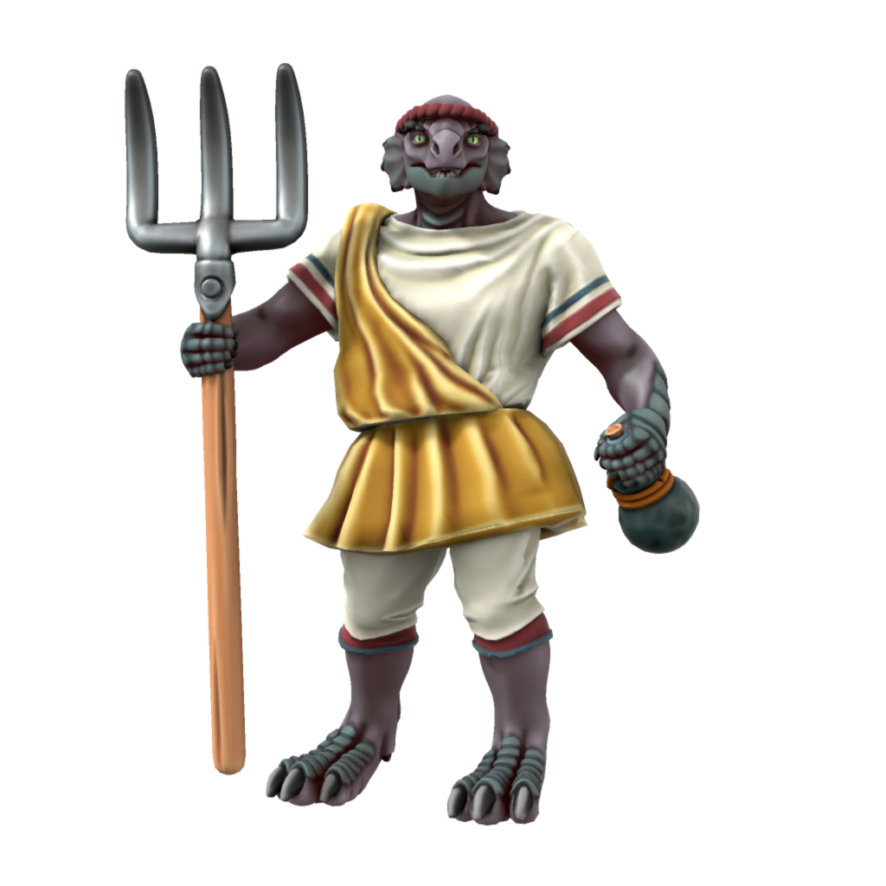

Dragonborn
The proud sons and daughters of Drace descend directly from the great dragon Draconus and thus embody many draconic features. They are a proud people with a strong sense of kinship, owing to their storied history.
Cultures
Draceans
Languages Common, Low Dracean, High Dracean (elites only)
Accent 🗣️
Drace remains the largest single polity of dragonborn - even those who live outside of the eternal city will frequently travel back to reconnect with their Dracean heritage. Those who live in the city itself are a deeply proud people, most working in either learned professions or living purely aristocratic lives. This presents a problem with feeding a large metropolitan population, the city is deeply in debt and would not survive without trade with its neighbours.
Provincial Dragonborn

Languages Common, Low Dracean, [[Servian, Noordic or Scutian]]
Accent 🗣️
In the days of the Dracean Empire, dragonborn could be found across the continent. The descendents of these dragonborn can still be found across what is now the Dracean Intercoastal Republic, living much as any other citizens of the republic. Though, most dragonborn retain a certain reverence for the city of Drace and Dracean culture in general.
Ageing
| Age | Human Equivalent |
|---|---|
| 6 | 4 |
| 17 | 8 |
| 30 | 12 |
| 46 | 16 |
| 63 | 20 |
| 98 | 30 |
| 130 | 40 |
| 163 | 50 |
| 195 | 60 |
| 228 | 70 |
| 260 | 80 |